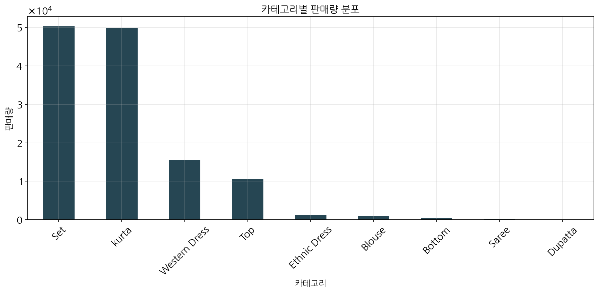
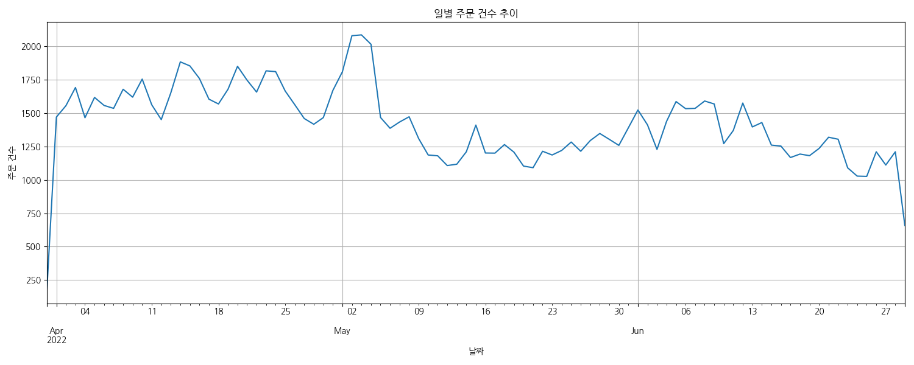
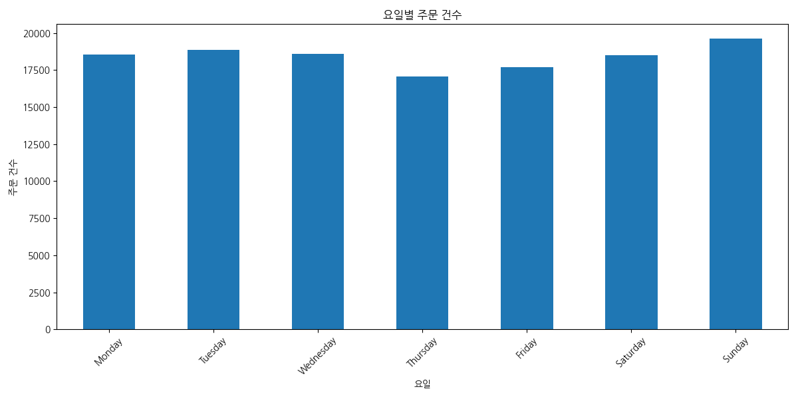
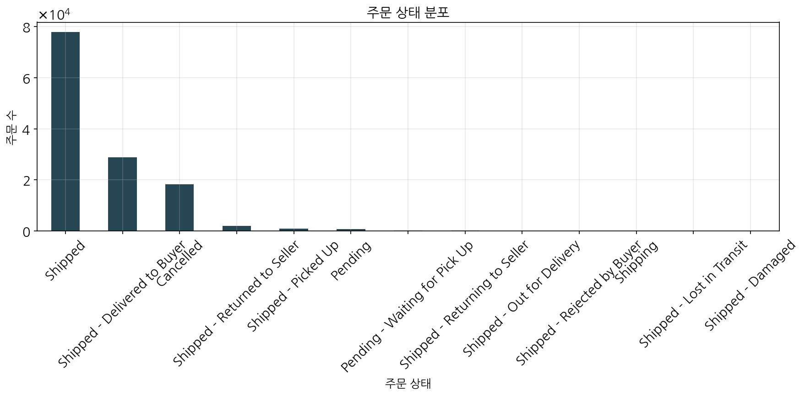

아마존 판매 데이터 분석 리포트
1. 요약
본 보고서는 아마존 판매 데이터를 분석하여 판매 트렌드, 고객 세그먼트, 제품 카테고리 성과 등을 파악하고 마케팅 인사이트를 도출하는 것을 목적으로 합니다. 전체 128,975건의 주문 데이터를 분석한 결과, 고객 세그먼트별 구매 특성, 카테고리별 성과 차이, 판매 채널 효율성, 그리고 구매 패턴 등에 관한 중요한 인사이트를 도출할 수 있었습니다.
주요 발견사항
- 고객 세그먼트: Premium 세그먼트(상위 33%)가 전체 매출의 48%를 차지하며, 평균 구매액은 967.53입니다.
- 제품 카테고리: Set과 kurta 카테고리가 전체 주문의 약 78%를 차지합니다.
- 판매 채널: Amazon.in이 전체 판매의 99.9%를 차지하며, Amazon 배송이 전체의 69%를 차지합니다.
- 구매 패턴: 주말(토,일)에 주문량이 증가하는 경향이 있습니다.
- 가격대: 가격대별로 구매 행동에 뚜렷한 차이가 있으며, Premium 세그먼트는 Set 카테고리를 선호합니다.
2. 데이터 개요
분석에 사용된 데이터는 아마존 판매 보고서로, 총 128,975행의 주문 기록과 24개의 변수로 구성되어 있습니다.
2.1. 데이터 구조
데이터는 주문 ID, 날짜, 상태, 배송 방식, 판매 채널, 제품 스타일, 카테고리, 수량, 금액, 배송지 등의 정보를 포함하고 있습니다.
2.2. 기본 통계량
| 통계량 |
수량(Qty) |
금액(Amount) |
| 평균 |
0.90 |
609.36 |
| 표준편차 |
0.31 |
313.35 |
| 최소값 |
0.00 |
0.00 |
| 25% 백분위수 |
1.00 |
413.00 |
| 중앙값 |
1.00 |
583.00 |
| 75% 백분위수 |
1.00 |
771.00 |
| 최대값 |
15.00 |
5,584.00 |
2.3. 주요 범주형 변수 분포
주문 상태
- Shipped: 77,804건 (60.3%)
- Shipped - Delivered to Buyer: 28,769건 (22.3%)
- Cancelled: 18,332건 (14.2%)
- Shipped - Returned to Seller: 1,953건 (1.5%)
- Shipped - Picked Up: 973건 (0.8%)
배송 방식
- Amazon: 89,698건 (69.5%)
- Merchant: 39,277건 (30.5%)
판매 채널
- Amazon.in: 128,851건 (99.9%)
- Non-Amazon: 124건 (0.1%)
제품 카테고리

그림 1: 카테고리별 주문 분포
Set과 kurta 카테고리가 전체 주문의 약 78%를 차지하며, Western Dress와 Top이 그 뒤를 잇고 있습니다.
3. 판매 트렌드 분석
3.1. 시간별 판매 추이

그림 2: 일별 주문량 추이

그림 3: 요일별 주문량
일별 주문량에는 상당한 변동성이 관찰되며, 요일별로는 주말(토요일, 일요일)에 주문량이 증가하는 경향이 있습니다. 일요일의 주문이 가장 많으며(19,619건), 목요일의 주문이 가장 적은 것으로 나타났습니다(17,069건).
3.2. 카테고리별 월간 판매 트렌드

그림 4: 카테고리별 월간 판매액 추이
대부분의 카테고리에서 월별 판매액의 변동성이 관찰됩니다. Set 카테고리가 전반적으로 가장 높은 판매액을 기록하고 있으며, 특정 월에는 판매량이 크게 증가하는 시즌 효과도 볼 수 있습니다.
3.3. 주문 금액 분포

그림 5: 주문 금액 분포
주문 금액은 대체로 오른쪽으로 치우친 분포를 보이며, 대다수의 주문은 300에서 900 사이의 금액대에 집중되어 있습니다. 평균 주문 금액은 609.36이며, 중앙값은 583.00입니다.
4. 세그먼트 분석
4.1. 고객 세그먼트별 특징
고객을 구매 금액에 따라 3개 세그먼트로 나누어 분석했습니다:
- Premium 세그먼트(상위 33%): 평균 구매액 967.53, 전체 매출의 48% 차지
- Mid-range 세그먼트(중간 33%): 평균 구매액 613.73, 전체 매출의 33% 차지
- Budget 세그먼트(하위 33%): 평균 구매액 376.13, 전체 매출의 19% 차지

그림 6: 고객 세그먼트별 매출 비중
4.2. 세그먼트별 선호 카테고리
| 세그먼트/카테고리 |
Set |
kurta |
Western Dress |
Top |
기타 |
| Premium |
27,004 |
2,347 |
8,135 |
789 |
852 |
| Mid-range |
17,823 |
11,153 |
5,969 |
5,884 |
726 |
| Budget |
2,215 |
33,217 |
600 |
3,492 |
974 |
Premium 세그먼트는 Set과 Western Dress 카테고리를 주로 구매하는 반면, Budget 세그먼트는 kurta를 압도적으로 선호하는 경향을 보입니다.
4.3. 세그먼트별 배송 방식 선호도
| 세그먼트 |
배송 방식 |
주문 수 |
총 금액 |
평균 금액 |
| Premium |
Amazon |
27,627 |
26,766,245.00 |
968.84 |
| Merchant |
11,500 |
11,090,202.63 |
964.37 |
| Mid-range |
Amazon |
27,447 |
16,664,645.00 |
607.16 |
| Merchant |
14,108 |
8,838,881.60 |
626.52 |
| Budget |
Amazon |
28,565 |
10,891,261.00 |
381.28 |
| Merchant |
11,933 |
4,341,443.07 |
363.82 |
Premium 세그먼트와 Budget 세그먼트는 Amazon 배송을 더 선호하는 경향이 있으며, Premium 세그먼트에서는 배송 방식에 따른 평균 구매 금액의 차이가 크지 않습니다.
5. 상품 및 지역 분석
5.1. 카테고리별 주요 지표
| 카테고리 |
평균 금액 |
주문 수 |
총 금액 |
취소율(%) |
| Set |
779.65 |
50,284 |
39,204,124.03 |
14.59 |
| kurta |
427.04 |
49,877 |
21,299,546.70 |
14.55 |
| Western Dress |
723.62 |
15,500 |
11,216,072.69 |
13.69 |
| Top |
503.46 |
10,622 |
5,347,792.30 |
12.01 |
| Ethnic Dress |
682.67 |
1,159 |
791,217.66 |
12.51 |
Set 카테고리는 가장 높은 총 매출과 평균 판매가를 기록한 반면, kurta는 두 번째로 많은 주문 수를 기록했지만 평균 판매가는 상대적으로 낮습니다.
5.2. 카테고리별 구매 수량

그림 7: 카테고리별 평균 구매 수량
대부분의 카테고리에서 평균 구매 수량은 0.9~1.0개 범위에 있으며, 이는 대부분의 고객이 한 번에 하나의 상품을 구매하는 경향이 있음을 보여줍니다.
5.3. 카테고리별 취소율

그림 8: 카테고리별 주문 취소율
Set과 kurta 카테고리는 다른 카테고리에 비해 상대적으로 높은 취소율을 보이고 있습니다. 반면 Dupatta 카테고리는 취소율이 0%로 나타났지만, 이는 주문 수가 매우 적기 때문일 수 있습니다.
5.4. 상위 판매 지역

그림 9: 상위 10개 도시별 판매액
BENGALURU, HYDERABAD, MUMBAI, NEW DELHI, CHENNAI가 매출 기준 상위 5개 도시로 나타났습니다. 특히 BENGALURU는 약 685만의 매출로 가장 큰 시장을 형성하고 있습니다.
6. 주문 상태 및 배송 분석
6.1. 주문 상태 분포

그림 10: 주문 상태 분포
전체 주문 중 약 83%가 성공적으로 배송(Shipped)되었으며, 14.2%는 취소(Cancelled)되었습니다. 배송 후 반품(Shipped - Returned to Seller)은 1.5%로 비교적 낮은 수준을 유지하고 있습니다.
6.2. 배송 방식 분석
| 배송 방식 |
주문 수 |
총 금액 |
평균 금액 |
| Amazon |
83,639 |
54,322,151.0 |
649.48 |
| Merchant |
37,541 |
24,270,527.3 |
646.51 |
Amazon 배송이 전체 주문의 69%를 차지하고 있으며, 평균 주문 금액은 Amazon 배송과 Merchant 배송이 유사한 수준을 보이고 있습니다.
7. 가격대별 분석
| 가격대 |
주문 수 |
총 금액 |
평균 금액 |
총 수량 |
| Very High |
24,168 |
26,183,177.73 |
1,083.38 |
23,645 |
| High |
23,769 |
17,994,297.93 |
757.05 |
22,765 |
| Medium |
24,553 |
14,997,527.12 |
610.82 |
23,462 |
| Low |
24,325 |
11,558,053.56 |
475.15 |
23,330 |
| Very Low |
24,365 |
7,859,621.96 |
322.58 |
23,280 |
가격대를 5개 구간으로 나누어 분석한 결과, Very High 가격대가 전체 매출의 가장 큰 비중을 차지하고 있습니다. 주목할 점은 모든 가격대에서 주문 수와 구매 수량이 비슷한 분포를 보이고 있다는 것입니다.
8. 마케팅 인사이트 및 제안
세그먼트별 차별화 전략
- Premium 세그먼트: Set 카테고리와 Western Dress를 중심으로 고가 제품 마케팅에 집중. 구매 금액 기준 가장 큰 비중을 차지하므로 충성도 프로그램 강화 필요.
- Mid-range 세그먼트: 다양한 카테고리에 고르게 분산된 구매 패턴을 보이므로, 교차 판매(cross-selling) 전략 적용. Western Dress와 Top 카테고리 프로모션 효과적.
- Budget 세그먼트: kurta 중심의 가격 프로모션 전략. 구매 빈도는 높지만 평균 구매액이 낮으므로, 가격 민감도를 고려한 할인 프로모션 필요.
카테고리 전략
- Set과 kurta 카테고리: 전체 주문의 78%를 차지하는 핵심 카테고리로, 재고 관리 최적화 및 다양한 스타일/디자인 확대 필요.
- Western Dress 카테고리: 평균 판매가가 높은 카테고리로 Premium 라인 확대 및 타겟 마케팅 강화.
- Dupatta, Saree 등 판매 저조 카테고리: 제품 라인 재검토 또는 번들 상품으로 제공하는 전략 검토.
- 취소율 관리: Set과 kurta의 상대적으로 높은 취소율(14.5% 이상)을 낮추기 위한 상품 정보 개선 및 고객 기대치 관리 필요.
판매 채널 및 배송 최적화
- Amazon 배송 서비스 강화: 전체 주문의 69%를 차지하는 Amazon 배송 서비스의 품질 유지 및 개선 필요.
- Premium 세그먼트 배송 경험: Premium 세그먼트가 Amazon 배송을 더 선호하는 경향이 있으므로, 고급 배송 옵션 제공.
- 지역별 배송 전략: BENGALURU, HYDERABAD 등 상위 판매 도시에 물류 최적화 및 빠른 배송 서비스 제공.
시간 기반 프로모션 전략
- 주말 특별 프로모션: 주말(토,일)에 주문량이 증가하는 패턴을 활용한 주말 특별 할인 이벤트 기획.
- 월별 시즌 프로모션: 카테고리별 월간 판매 트렌드를 활용하여 시즌성 프로모션 계획.
- 타임 세일: 주문량이 상대적으로 적은 평일(목요일 등)에 한정 시간 특별 할인을 통한 판매 촉진.
9. 결론
아마존 판매 데이터 분석을 통해 고객 세그먼트별 구매 특성, 제품 카테고리별 성과, 지역별 판매 현황, 시간대별 구매 패턴 등 다양한 측면에서의 인사이트를 도출할 수 있었습니다.
특히 Premium 세그먼트가 전체 매출의 48%를 차지하며, Set과 kurta 카테고리가 전체 주문의 약 78%를 차지한다는 점은 마케팅 자원 배분에 있어 중요한 지표가 됩니다. 또한 세그먼트별로 선호하는 제품 카테고리의 차이가 뚜렷하게 나타나, 세그먼트별 맞춤형 마케팅 전략의 필요성을 강조합니다.
앞서 제시한 마케팅 인사이트와 제안사항을 바탕으로 타겟 마케팅을 강화하고 카테고리별 포지셔닝을 최적화한다면, 매출 증대와 고객 만족도 향상에 기여할 수 있을 것으로 기대됩니다.